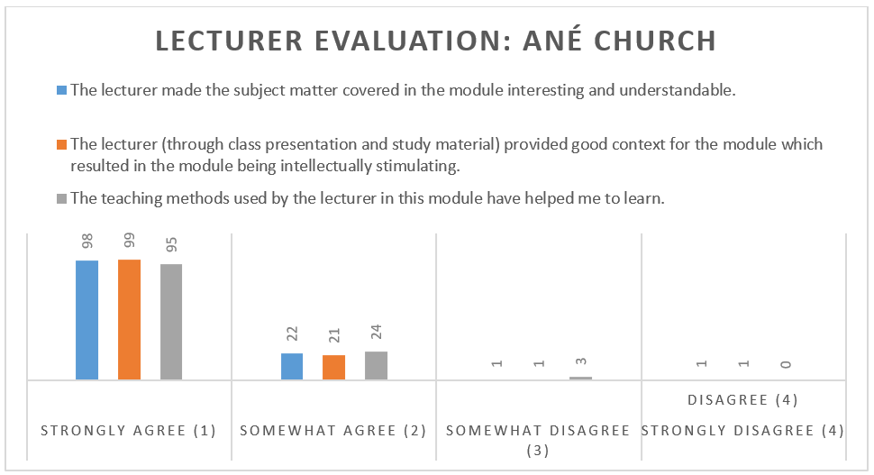
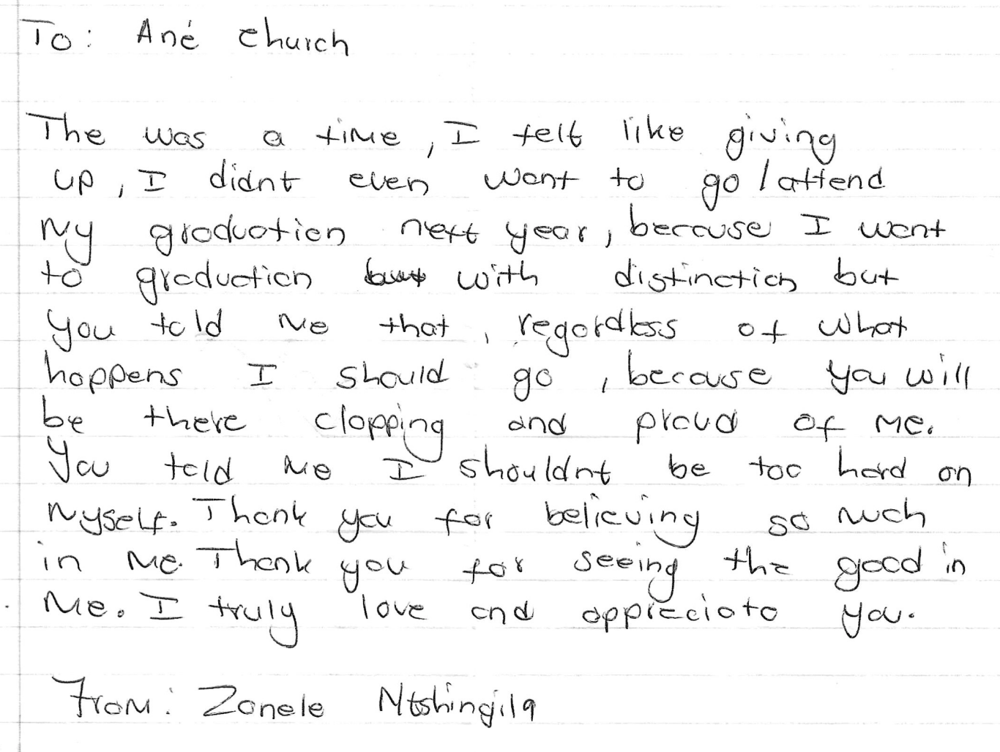
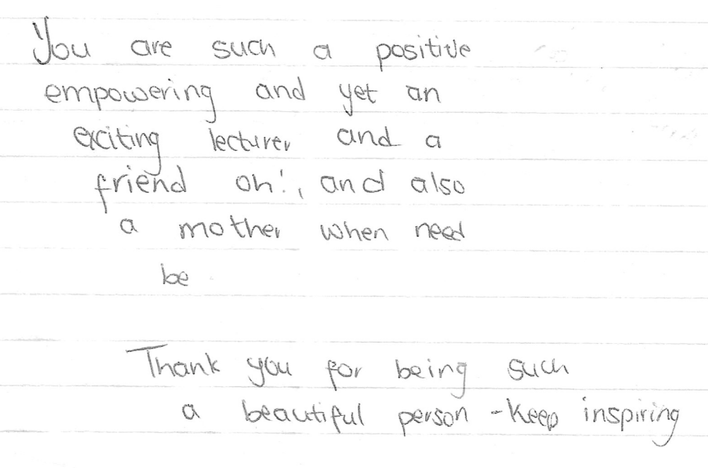
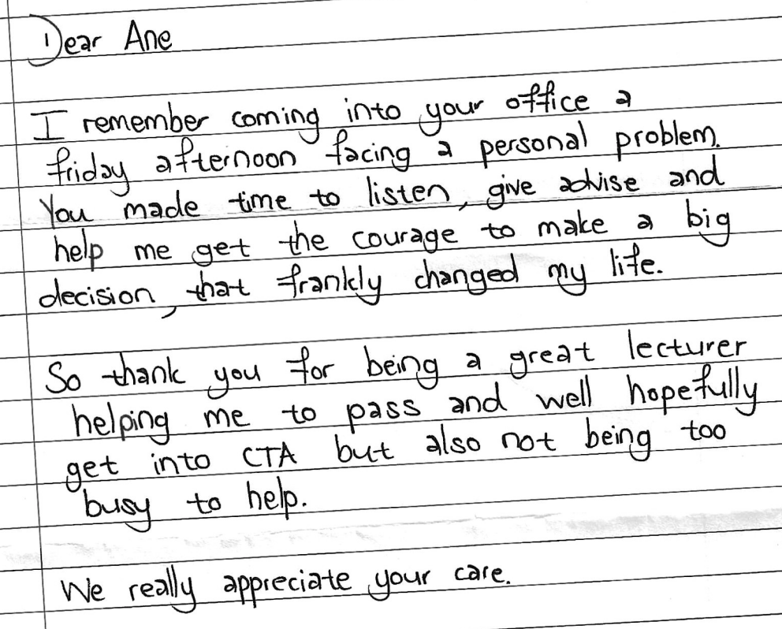

Ané Church: Teaching Portifolio
Bridging the gap between theory and practice by fostering technical proficiency and real-world readiness in students.
Teaching Philosophy
I believe that it is my responsibility to inspire and motivate students to become responsible and ethical professionals. By fostering critical, moral and innovative thinking, I aim to shape good corporate citizens, contributing to an enhanced society.
To shape these professionals, students need more than just technical knowledge in Accounting and Auditing. They must also understand how professionals in these fields think and solve problems. To achieve this, I bring real-life examples to class and inspire students through exposure to different professionals, issues and examples, making the professional world real and tangible. This approach helps students appreciate the profession and prepare for the world of work, making them well-rounded, employable graduates.
I believe that all students have the ability and natural aptitude to learn but that they do so differently. In order to cater for these different learning styles, a variety of tools need to be used to help them learn. I also believe that the best way to learn is to do the work yourself and, therefore, encourage student engagement and self-awareness through reflection. This is true for both students and educators, and therefore, I also prioritise testing new teaching initiatives, obtaining feedback, and actively reflecting on my teaching practices.
I aspire to send individuals into the workforce who not only know the subject but also know themselves – their capabilities, value, opportunities to improve and ability to influence what matters – and the guts to do it…
Personal Profile
As an enthusiastic lecturer, I thrive on bringing energy, passion, and technical expertise to the classroom, whether I teach External Auditing, Professional Ethics or Corporate Governance. I believe these topics are not just subjects but essential building blocks for well-rounded professionals who understand the interplay between the various subject areas and how they fit into the world they will step into. I have a deep-rooted passion for ethics and a genuine desire to shape the leaders of tomorrow by nurturing traits like integrity, professionalism, and ethical leadership. It is my belief that by sowing these seeds today, we can cultivate a more responsible and prosperous tomorrow. I aim to sow these seeds in the classroom for all my students in the various modules that I am involved in. These modules include:
| Module | Programme / Student Group | Period | Responsibilities |
|---|---|---|---|
| EACG3708 Auditing and Corporate Governance | B.Accounting Third Year | 2018 – 2025 | Present and coordinate 50% of the module. |
| EAUD5808 Auditing and Corporate Governance | Post Graduate Diploma in General Accountancy | 2018 – 2025 | Present and coordinate 50% of the module. |
| EAUD6808 Auditing and Corporate Governance | B.Com Honours (Accounting) | 2018 – 2025 | Present and coordinate 50% of the module. |
| EACG6808/5808 Advanced Auditing and Corporate Governance | B.Accounting Honours and Post Graduate Diploma in Chartered Accountancy. | 2024 – 2025 | Present the Professional Ethics Unit of the module. |
| ERRA6808 Research and Research Methodology for B.Com Hons (Accounting) | B.Com Honours (Accounting) | 2025 | Co-supervision for a group of 5 students who need to submit a mini dissertation in order to complete the module. |
| EOEC2614 Organisational Ethics and Citizenship | Second-year students in: Accountancy Public Administration Finance | 2024 | Designed and coordinated the module with some teaching responsibilities. |
| EACE2614 Accountancy Environment | B.Accounting and B.Com Accounting Second Year | 2017 – 2018 | Designed, coordinated and presented 100% of the module. |
| EACG2708 External Auditing | B.Accounting Second Year | 2016 – 2017 | Redesigned, coordinated and presented 100% of the module. |
I am also the Year-Group Coordinator for the B.Accounting Third Year, Post-Graduate Diploma in General Accountancy, and B.Com Honours (Accounting) programmes. In this role, I oversee the administrative aspects of these programs, including managing student-related issues, but it also includes facilitating skills development opportunities, and ensuring cohesive integration of teaching and learning across the various modules.
Teaching Approach Practice & Effectiveness
I see myself as a facilitator of learning. My role is to guide my students to become independent, life-long learners. I firmly support the words of Terry Doyle (2018): “Whoever does the work, does the learning”, and I believe that it is my responsibility to optimise the opportunities for my students to learn. This emphasises the necessity to include different modes of teaching in my modules, and I, therefore, try to follow a blended methodology to cater to my students' different learning needs. My view of blended learning does not only include the traditional “online” and “face-to-face” components but also includes spaces where students can learn outside of the class and online environments.
EACG3708/EAUD5808/EAUD6808: Auditing and Corporate Governance
Auditing and Corporate Governance are concepts that are mostly unfamiliar to students when they enter the higher education space. The other core modules of my students (Financial Accounting, Taxation and Management Accounting) are not so foreign to them as they have been exposed to elements of these modules at school and in life in general. With Auditing and Corporate Governance, the concepts are abstract and removed from what my students have dealt with previously, making it very difficult to understand and envision. I am, therefore, very deliberate in specifically including real/actual experiences and content, bringing students closer to the real world. Through most of these experiences, I also place emphasis on developing students’ pervasive skills and graduate attributes. This aligns not only with SAICA’s Competency Framework (which is the framework that the School of Accountancy needs to apply for purposes of accreditation of our programmes with SAICA) but also with the UFS Vision 130.
Note that I share this module with my colleague, Nadia Kganakga, and she covers 50% of the content. The table below sets out the interventions that I incorporate and methods I employ in some of the larger units of the Auditing and Corporate Governance module that I am responsible for. Please follow the related links for evidence of the various interventions.
| Unit & Method | Discussion | Link with the “real world” / Skills development |
|---|---|---|
|
The King IV Report on Corporate
Governance
(Face-to-face traditional lectures)
|
The first contact that I have with my class is this unit. I do this with a traditional approach so I can guide students through the unit and get to know each other in a face-to-face setting. This sets the tone for the rest of the year and is key to building a relationship with my students. (Also see the discussion below on the Business Acumen Day.) |
One of the biggest corporate scandals of the past decade is the collapse of Steinhoff. To utilise this in class, I contacted MultiChoice (DSTV/Showmax) to get permission to show my students the Steinheist Docuseries, which became a “movie day”. Steinheist Movie Day I then developed an integrated group assignment based on Steinhoff's collapse. In addition to investigating the governance and ethics failures, students also need to research elements of their other core modules. This aids in breaking down the silos between the different modules in order for students to better understand the interplay between different modules. In addition, it develops research skills, teamwork, and writing skills. Steinhoff Assignment |
|
The SAICA Code of Professional Conduct
(Flipped Classroom)
|
For this unit, I make use of a flipped classroom approach to allow me to work through more questions with students and have active discussions and debates on professional ethics in class. This often also flows into discussions on business and personal ethics, where students can learn from each other. I worked closely with CTL to develop this flipped classroom course on Blackboard. Students watch videos and complete tasks and quizzes online, and I then make use of worksheets and questions in class to facilitate discussion and guide students on exam techniques. An example of one of these videos can be found here, and an example of a worksheet can be found here. |
In this unit, I make use of the actual disciplinary documents / hearing outcomes as published by SAICA and information on breaches of the code that are available in the news. We have deliberate discussions on breaches of the code by trainee accountants and I share with students the SAICA Social Media Guidelines . I aim specifically to instil ethical values in students from a young age to display to them that, even when they are still in training, what they do and how they conduct themselves in person and on social media matters. “Do the right thing” has become somewhat of a chant in my classes. |
|
The Auditor’s responsibility towards the
detection of fraud
(Face to Face traditional lectures)
|
In this unit, we explore the role of auditors in detecting fraud. This is one of the big contributors to the audit expectation gap (Quick, 2020), and I believe that proper education on the matter can really narrow the gap to some extent. The auditor’s responsibility to detect fraud is addressed in auditing standards, but for students to truly understand an auditor’s role, they must first understand fraud itself. |
In addition to the Steinheist assignment (addressed above) that also increases students’ understanding and awareness of fraud, I make use of material published by the Association of Certified Fraud Examiners, which they make available annually as part of their Annual International Fraud Awareness Week. I also make use of Case Studies that are made available by EY (a Big-4 Audit Firm) through their EY Foundation Academic Resources. Students watch enacted videos simulating a real-life company under audit and need to identify fraud indicators in these scenarios. One of these videos can be viewed here. |
|
The Auditing Profession Act (APA)
(Blended approach with videos and
face-to-face contact)
|
This is a short but important unit whereby students need to understand relevant sections of the APA. A blended approach is followed, whereby a brief theory introduction is done in class, and various videos are done on questions. |
The lecture is supplemented by a guest lecture by Prof Bernard Agulhas. I deliberately invite Prof Agulhas to present this lecture as he was the CEO of the Independent Regulatory Board of Auditors (IRBA), custodian of the APA, for an extensive period. During his tenure, the APA was drafted and implemented, and he wrote and/or had input in most of the sections of the APA. He then also dealt extensively with breaches of the APA by registered auditors. In his presentation, he addresses the reasons for certain sections, such as common breaches, sanctions, etc. |
|
Client Acceptance and Continuance
(Blended approach with videos and
face-to-face contact)
|
Determining whether to accept (or continue with) an audit client is the first step in the audit process. It is necessary to give a holistic view of the audit process (birds-eye-view) before the details are dealt with to enable students to easily follow the rest of the process. This is with a video to enable students to refer back to the big picture as this unit is taught. Jana Lamprecht and I compiled the video. I then address this first step of the process in detail by working through the standard and guiding students through questions. |
In the same way that I guide students through questions in this unit, students have the opportunity to guide others through a Collaborative Online International Learning (COIL) project with Coventry University in the United Kingdom. Both student groups, UFS (SA) and Coventry (UK) are given the same real-life scenario and engage online in role play. The SA students play the role of Audit Partners, while the UK students (being at a lower academic level) play the role of Audit Trainees The partners then guide the trainees through the considerations to accept or decline the new client. This intervention gives students a taste of the real world through role-play. It also enhances their leadership, communication, teamwork, and digital skills, as well as develops their intercultural competence. This project has produced wonderful results. While this has only been done on a voluntary basis, efforts are made to make this a mandatory project for all students. A potential research project between myself and the UK colleagues on this assignment is currently being explored. |
In addition to the above, I implemented the following interventions to further enhance students’ understanding of the real world and skills development which is not limited to a specific module.
Industry Visits
I have utilised strong connections with industry to enable students to make on-site visits to big organisations in Bloemfontein. I have secured a sponsorship from Interstate Buslines to transport our students between campus and these companies, which is central to the success of this initiative, given the large student group (approximately 300 students). Students then have the choice of which company they would like to visit, as all companies are in different industries. These include Windmill Casino (Entertainment), SA Truck Bodies (Manufacturing), Interstate Buslines (Transportation) and the Raubex Group (Construction).
When students visit these companies, they are taken on a tour through the operations site and listen to presentations from the finance teams. They have the opportunity to ask questions and engage with professionals who are doing the work that they are aiming towards. This really does wonders for students’ motivation and inspires them to work hard to reach these goals. These visits develop students’ business acumen, break down silos between modules (as they see how modules integrate) and enhance students’ view of the relevance of their course/studies. Students are also required to write a reflective essay on these visits, which addresses writing skills. More information on these visits is in an article published on the UFS website, which is available here.
Business Acumen Day
In 2023, I started the initiative to host an annual Business Acumen Day, each year with a different focus. In 2023, the Business Acumen Day had an Auditing focus, while in 2024, the focus was on Governance and Sustainability.
On this day, I invite high-profile speakers to address our students on relevant topics. The effect that these speakers have on students is truly inspiring. They relate to these speakers as role models and actively engage with them through questions and answer sessions after the presentations.
In 2023, I secured Standards Bank as a sponsor for the event, and the speakers included:
- Rob Rose (editor of the Financial Mail and author of Steinheist, which is the book that the docuseries Steinheist is based on; refer to the Unit on the King IV Report on Corporate Governance above);
- Patricia Stock CA(SA) (at the time, an inspiring Audit Partner and subsequently appointed as the CEO of SAICA);
- Conrad de Wee (SAICA National Council member); and
- Prof Bernard Agulhas (former Audit Regulator/CEO of IRBA and adjunct professor at the SoA).
In 2024, we partnered with the Institute of Directors (IoDSA) to host this event and the speakers were:
- Ansie Ramalho (Chair of the King Committee responsible for drafting the King IV Report);
- Prof Parmi Natesan (CEO of the IoD and adjunct professor at the SoA);
- Felicia Msiza (CEO of the Raubex Group, the largest road construction company in Africa); and
- Rob Rose (as a repeat from last year, given his insightful presentations and deep knowledge in the financial world as a renowned, award-winning financial journalist).
This event is hosted in the Callie Human as we invite not only my students but also all students in the SoA (second year up to post-graduate). The invitation sent to students can be viewed here: 2023 and 2024. In addition to the student event, we also host a panel discussion with the same speakers, to which SoA stakeholders are invited. This strengthens the School’s relationship with various stakeholders, such as those hosting our students at Industry Visits.
In 2025, the Business Acumen Day will be held in August with the theme of Ethical Leadership. With assistance from one of the faculty’s adjunct professors, I was able to secure Former Chief Justice of South Africa, Judge Raymond Zondo as the keynote speaker to address not only the students within the School of Accountancy, but also the wider faculty.
International Audit Week
Through the strong connection built with Coventry University, England (refer to the COIL Project addressed in the table above), I was invited by Coventry University to bring students to their International Audit Week, hosted annually in October. I solely raised R250 000 from external funders, which enabled me and Prof Frans Prinsloo to take five of the School of Accountancy’s top-performing students to England at the end of last year.
The 2025 International Audit Week is scheduled to either take place in the Netherlands or in Switzerland and I have already raised R100 000 for this purpose, while awaiting feedback from other funders.
We often focus so much on students who struggle, and rightfully so, but we tend to forget to reward our top-performing students. This initiative serves just that purpose and, through proper exposure, should motivate top scholars in the Free State to study with the UFS SoA. This initiative also addresses the UFS Vision 130 focus on Internationalisation.
Promotion of Student Learning
Student Body
For the EACG3708/EAUD5808/EAUD6808: Auditing and Corporate Governance modules that I teach, my students are rather diverse. This group includes students who are either enrolled in their final year of B. Accounting or the post-graduate programmes after completing their B.Com (Accounting) degree. In 2024, the student body in these modules included 250 students, comprising 106 B.Acc third year, 95 B.Com Hons., and 49 PGDipGA students. The gender distribution is 143 females to 107 males, with a racial composition of 211 African, 11 Coloured, 26 White and 2 Indian students. Among these, 180 are first-time attendees, while 70 are repeating the course, including 12 students repeating to improve their marks for B.Acc Honors admission. The numbers for 2025 are still a work in progress and should be confirmed after the first semester tests’ data is available. I am privileged to have had Jana Lamprecht as a colleague in this module until 2024, who utilised advanced Excel and Power BI tools to analyse statistics and track student success. These statistics enable us to address student-specific needs and track student success and challenges.
Challenges faced by students that hinder their success
I have identified three key issues that students struggle with in these programmes, which include:
- Time management when writing assessments
- A focussing too much on theory and neglecting application
- Not learning from mistakes by doing proper post-mortems on their assessments.
I, therefore, make deliberate time to address these issues in class by demonstrating techniques to address these challenges. For example, I use the analogy of sport (I let students pick a sport and adapt to that). The discussion on Theory vs Application includes the following:
“Do you think Christiano Ronaldo (world-renowned football player) spends time in the gym as well as practising skills on the football field? [Students agree.] What do you think will happen if he only goes to the gym and never sets foot on the field? He will surely be very fit, but he would lack the skills needed to win the match. What would happen if he only spent time on the field and never set foot in the gym? He will have great skills and football abilities, and while he might not be as fit as one would hope, he will also gain some fitness on the field by running around and being active. He might still have a chance to win the match. It works the same with studies.
If you want to be the best, you need to make time for both Gym/Theory and Field practice/Questions. But if time is limited and you need to compromise on one, it can never be the practical part. Through practising questions (field practice), you get the skills needed for the examination, but naturally, you also learn at least some of the theory (fitness) through this process. This way, you still have a chance to do well in the test/exam (match).”
Students naturally start with studying theory but often spend so much time on the theory that they neglect the practical application. I have received very positive feedback from students on the difference it made when they changed their approach to a more practical one.
My previous colleague in this module, Jana, and I also designed a post-mortem form that students need to complete after their assessments. This serves as a reflection on their learning, successes and mistakes and guides them through the process. So many students have told us that, when faced with poor test results, they cannot face it and just ignore it. We, however, believe that tests are a learning opportunity, and if students do not use them to learn from their mistakes, they tend to repeat the same/similar mistakes in future assessments. The post-mortem form is adapted with each assessment, but an example can be viewed here.
Learning and Teaching Strategies and Promoting Students’ Understanding of the Module
Strategies employed in this module to promote student learning and their understanding of the module include a blended learning approach with deliberate integration of the real world. This is discussed fully under the Teaching Approach, Practice and Effectiveness above.
In addition, content materials are made available to students in a carefully structured manner. Given that students’ time is so limited in the Accountancy programmes, I do not want students to waste unnecessary time wondering what they need to do and where they can find the information. Each unit in the module has a detailed unit guide (per unit within the module), while I also provide a roadmap to each unit as a quick reference guide to what students should prepare for class, what will be done in class and what should be done afterwards.
Insights into student learning
In addition to the insights mentioned above, I am very deliberate in obtaining feedback from our students, not only on our personal lecturing styles but also on the way that students experience different interventions, material, etc. Through this, we also obtain information on the challenges that they experience and the changes that they would like to see in the module. We do this with formal evaluations (in addition to those done by the EMS Teaching and Learning Office), as we value module-specific feedback, enabling us to reflect deeply on the feedback and respond appropriately. An example of this feedback form can be viewed here. In response to the feedback received from students, we have, for example, changed the order in which topics are presented to enable more learning opportunities on certain topics before the examination.
Student development and support (including student discipline)
Various initiatives are described in the previous sections, addressing the development of graduate attributes, such as business acumen, digital skills, writing skills and communication skills. Students are also actively and continuously encouraged to consult with lecturers and academic trainees. My WhatsApp number is available to students to enable them to ask a quick question when they get stuck. I welcome voice notes (and send many of them!) to help students progress when studying. I do not want students to take an hour out of their day to walk to campus and back when they can just ask quickly on WhatsApp. Oftentimes, the problem is bigger than a WhatsApp response, and then I spent time with in-person consultations.
My students generally do not misuse my personal number. We have a good relationship and mutual respect. I do my best to help them as quickly as possible, and they understand that I have other responsibilities and personal commitments. I genuinely care for my students and believe that this makes me approachable when students are in need of support. Refer to the Reflection and Feedback section below for more details.
I have also dealt with difficult student disciplinary cases, as evidenced by the linked documentation. I take the academic misconduct of students very seriously, as this directly filters into the professionals that we are sending into the workplace. Nonetheless, with the specific student referred to in the linked communication, I spent more than an hour consulting with him in my office after his sanction, unpacking the situation and supporting the student in his decisions further. Everyone makes mistakes, and we can all do with some support and kindness when this happens.
Curriculum & Course Development
In addition to ensuring that the EACG3708/EAUD5808/EAUD6808 modules align with the SAICA Competency Framework, I also played a pivotal role in designing and developing the EOEC2614 (Organisational Ethics and Citizenship) module, which was presented for the first time in 2024 to Accounting, Public Administration and Finance students in the EMS faculty.
The module is designed to be fully blended, with two hours of online (mostly pre-recorded) lectures and a two-hour practical session, which takes place face-to-face. Various lecturers assist in recording lectures and presenting practical classes on both the Bloemfontein and Qwaqwa campuses. I facilitate and coordinate the collaboration on this module.
In addition to the online lectures and in-person practical classes, students need to address and submit various case studies in different settings to practice and display their ethical reasoning in common business ethics dilemmas. Students double peer-review each other’s case study submissions as this facilitates reflection. When students review their peers’ work, it also gives them different perspectives and broadens their ethical reasoning and critical thinking.
An ethics project is also done in this module, whereby students need to do a presentation on an ethical dilemma in business. Student work in teams and submit a video of their presentation. This develops teamwork, digital skills and, most importantly, communication and presentation skills. An example of such a submission is included here.
New technologies are embraced in this module, with the use of Feedback Fruits in recorded lectures. This enables video recordings to stop at certain times, requiring students to answer content-specific questions before they can continue. This ensures that students truly engage with the content and not only play videos without watching them. In addition, live quizzes are used in class through the platform quizizz.com to encourage engagement and facilitated discussions in face-to-face classes, especially given the large size of the class (800+ students).
To facilitate quality and consistency in this module, a standard approach to content development was followed, which included the preparation/presentation of the following per unit (links to examples included):
- Content slides and videos
- Guidance to the lecturer (to ensure consistency between BFN and QQ)
- Guidance for the setup of recorded lectures to incorporate questions on Feedback Fruits
- Case studies to be completed.
Assessment Practices
I firmly believe that assessment drives performance, and therefore, I include multiple assessment opportunities in my modules. I design formal semester tests (summative assessments) as case studies that students are likely to encounter in practice, and the outcomes are aligned with the SAICA Competency Framework. These assessments are cumulative and, therefore, aid in students’ deep and continuous learning. My assessments are moderated by the Director of the School (being a subject matter expert), and the feedback on my assessments rarely requires significant changes. An example of moderation feedback can be viewed here, while an example of an assessment can be viewed here. Note that 50% of assessments are prepared by my colleague, Nadia Kganakga, as we share this module.
I also incorporate various formative assessments, which include scoped class tests (enabling students to focus on a specific element at a time), quizzes and assignments. The assessment breakdown for my module is as follows:

Please see Insights into Student Learning under Promotion of Student Learning for how assessments are utilised as reflection and learning opportunities for students. I have also designed self-reflection quizzes for students to complete after assessments, for which I have won a UFS Excellence in Teaching and Learning Award.
Mentoring & Coaching
Students often consult with me on matters other than technical academic content. This includes issues of emotional wellness, being overwhelmed, time management, study techniques and even relationships. I see this as a necessary part of being a lecturer, as I am to send well-rounded individuals into the workplace.
I also had to guide two new colleagues appointed in the SoA in 2023/2024, Dakalo Nelwamondo (BFN) and Hannali Labuschagne (QQ). I guided them through the practical parts of teaching at the UFS (classroom technologies, Blackboard, assessments, etc.) and moderated their assessments and learning materials. For approximately four months, I scheduled weekly MS Teams meetings with them to check in and unpack various challenges. This year (2025) I again have a new colleague, Nadia Kganakga, for whom I serve as the Onboarding Buddy, and guiding her not only through the general University matters, but also matter specific to the module that we share.
I am also responsible for guiding and reviewing the competencies of academic trainees who are appointed to the SoA on an annual basis. This is done through the SAICA Electronic Assessment Tool. In addition to trainees’ official technical and pervasive skills, we often have check-in meetings to unpack their challenges, and I try to guide them in their approach and reasoning.
Reflection & Feedback
Self reflection
In the same way that I encourage my students to reflect and improve on their mistakes, I view reflection as an absolute necessity in teaching excellence and academic leadership. I particularly reflect on my students’ assessment results, as well as the presentation of each unit, to note what worked and what should be changed in future lessons. An example of such a reflection can be viewed here.
Student feedback
As described under Promotion of Student Learning, I obtain detailed student feedback through module evaluations that we conduct in addition to the EMS standard evaluations, as this provides us with insights into student learning. This evaluation is done with manual forms (as we receive more student responses in this way compared to online surveys), and the data is then captured independently by a colleague within the SoA. In addition to evaluating the module and material and highlighting challenges, part of this process includes a lecturer-specific evaluation. My most recent individual results were as follows:
In addition to the formal evaluations, I often receive informal feedback from students through notes, emails and WhatsApp messages. This is the kind of feedback that I appreciate most, as these messages are sincere and not forced. I have included copies of most of these messages here and some below. It is in these messages that one can see love and care for students. It is easy to compile portfolios that look impressive, but sincere feedback is what should, in my view, carry the most weight.
  Professional Development and Teaching Recognition
I often attend teaching and learning conferences to ensure that I am up to date with new innovations which may be effective in my modules. I have attended most UFS Learning and Teaching Conferences since I started at the UFS, and have also attended external conferences, including the Southern African Accounting Association (SAAA) conference (2016), the Female Voices in COIL and iKudu Conferences in the UK (2024) and the iKudu Closing Conference in Bloemfontein (2024).
I have presented at a number of teaching and learning conferences and colloquiums, including:
- Female Voices in COIL (United Kingdom) – 2024 (UFS Website feature)
- UFS Teaching & Learning Conference - 2019, 2020 (UFS Award Won), and 2024 (Two UFS Awards Won - see below)
- UFS Blended Learning Colloquium - 2019
- UFS Innovation Showcase - 2018
I am part of a group of auditing academics from four South African Universities (NMU, UJ, UCT and UFS) who meet online on a monthly basis to share insights and ideas to improve our teaching initiatives. I have also been consulted by academics from two universities (WSU and UJ) on the design and development of Business Ethics modules.
Research & Scholorship
Conference Presentations
International
Title of Conference: Female Voices in Global
South-North COIL-VE
Title of presentation: Enhancing Skills Development
Through COIL
Place: Coventry, United Kingdom
Date: 18 March 2024
Evidence: Click
here.
Title of Conference: The Future of Accounting –
Adapting to a
Changing Landscape
Title of presentation: Ethics: Cornerstone of the
Accounting
Profession
Place: Victoria Falls, Zimbabwe
Date: 1 July 2024
Evidence: Click
here.
Local
Title of Conference: UFS Learning and Teaching
Conference 2024:
Enhancing Quality Blended Learning and Teaching within the UFS Context
Title of presentation: Enhancing Graduate Attributes
and Skills
Development of Final Year and Post-Graduate Auditing Students through
COIL
Place: UFS
Date: September 2024
Award 1: Winner for the category Student Engagement and
Motivation
Award 2: Best Conference Paper
Title of Conference: UFS Learning and Teaching
Conference 2020
Title of presentation: TPACK & Rapid Prototyping:
Flipping the Classroom
for Professional Ethics
Place: UFS
Date: September 2020
Title of Conference: UFS Learning and Teaching
Conference 2019
Title of presentation: Student Self-Awareness through
Reflection
Place: UFS
Date: September 2019
Award: Winner for the category Innovative methods in
Assessment Practice
Title of Conference: UFS Blended Learning Colloquium
2019
Title of presentation: Flipping the Classroom for
Teaching Professional
Ethics
Place: UFS
Date: August 2019
Title of Conference: UFS Innovation Showcase 2018
Title of presentation: Teaching with Technology
Place: UFS
Date: 21 September 2018
Chapters in books
Title of chapter: Professional Ethics: Accountants and
auditors as
professionals (co-author)
Title of book: Ethics for Accountants and Auditors, 5th
Edition
Place of publication: South Africa
Publisher: Oxford University Press
Date: To be published in 2025
Title of chapter: Professional Ethics: Codes of
professional ethics
(co-author)
Title of book: Ethics for Accountants and Auditors, 5th
Edition
Place of publication: South Africa
Publisher: Oxford University Press
Date: To be published in 2025
Popular Articles
International
Title: The ethics of numbers (republished with
permission from Financial
Mail)
Publication: Global Governance Voice (published by the
Corporate
Secretaries International Association)
Date: 19 October 2023
Link: Link
to article
Title: A question of trust
Publication: Global Governance Voice (published by the
Corporate
Secretaries International Association)
Date: 1 August 2023
Link: Link
to article
Local
Title: Private Companies, the Audit Expectation Gap and
Auditor
Independence (co-authored with Prof Prinsloo)
Publication: Accountancy SA (published by the South
African Institute of
Chartered Accountants (SAICA))
Date: 1 November 2024
Link: Link
to article
Title: The unseen sector
Publication: Financial Mail/Business Live
Date: 8 February 2024
Link: Link
to article
Title: The ethics of numbers
Publication: Financial Mail
Date: 19 October 2023
Link: Link
to article
Title: Future accountants should strive to embrace
ethics and impact
society
Publication: BizCommunity
Date: 9 October 2023
Link: Link
to article
Title: To comply or not to comply (republished with
permission from
Financial Mail)
Publication: Auditing SA (published by the South
African Institute of
Government Auditors (SAIGA))
Date: 1 October 2023
Link: Link
to article
Title: Investing in students and stakeholders
Publication: Accountancy SA (published by the South
African Institute of
Chartered Accountants (SAICA))
Date: 1 September 2023
Link: Link
to article
Title: To comply or not to comply
Publication: Financial Mail/Business Live
Date: 17 August 2023
Link: Link
to article
Other
The strong industry connections that I have built over the years have enabled many of the initiatives mentioned in previous sections, both practically and financially. I regularly present training on personal, business and professional ethics to practitioners and trainees in the Accountancy Profession, both locally and internationally. This includes training on behalf of:
- The South African Institute of Chartered Accountants (SAICA)
- The South African Institute of Professional Accountants (SAIPA)
- The Namibian Institute of Professional Accountants (NIPA)
- The Chartered Institute of Business Accountants (CIBA)
- Pro-Beta Training
- Various small and medium-sized Accountancy firms.
In my role as a professional trainer, I am regularly consulted by the profession on matters surrounding ethics and governance. I currently serve on the Ethics Committee of SAICA, which is a national board-elected committee. I have previously served on the district, Free State and Central Region structures of SAICA for a period of 9 years. Previously, I have also set questions for the SAICA national board examination (Initial Test of Competence).